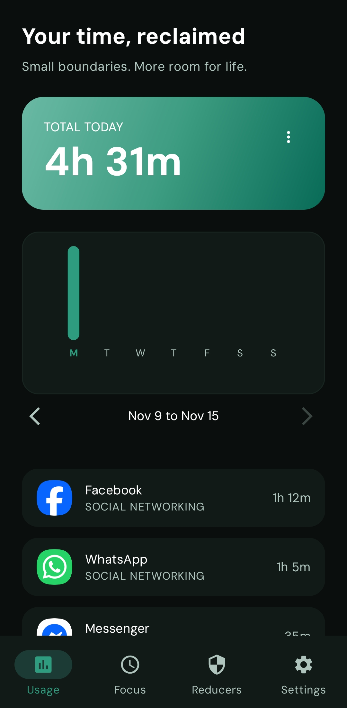
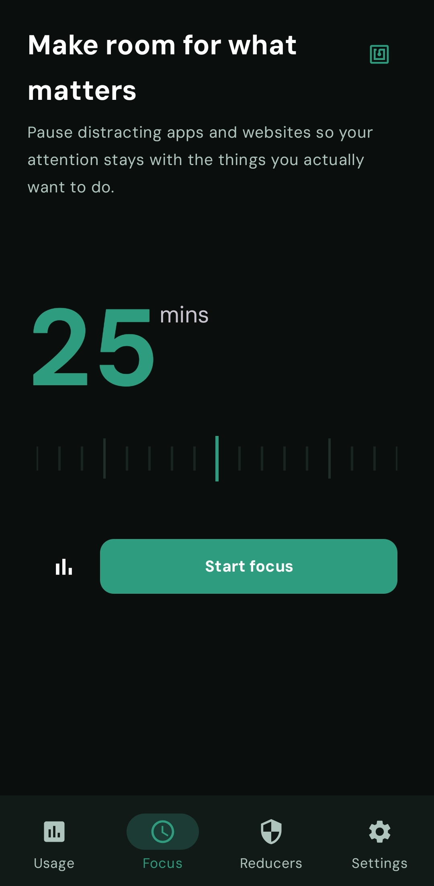
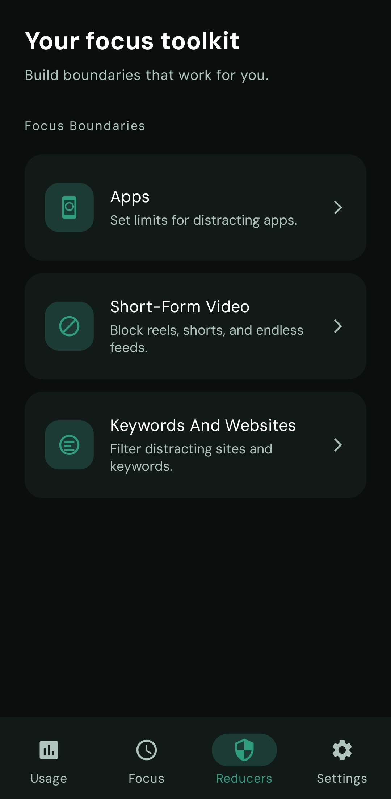
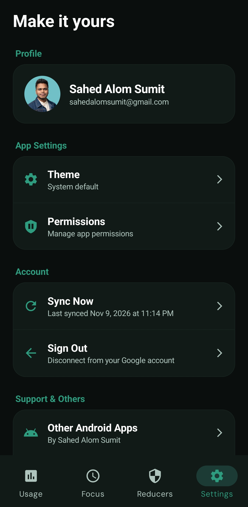
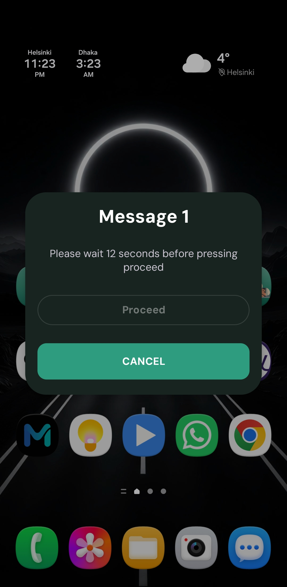
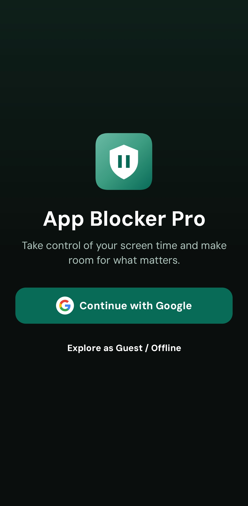
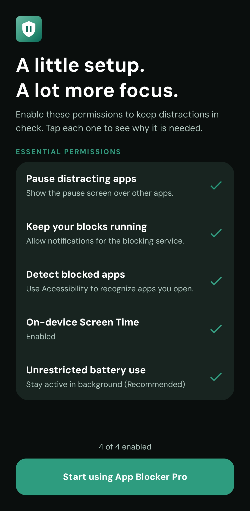
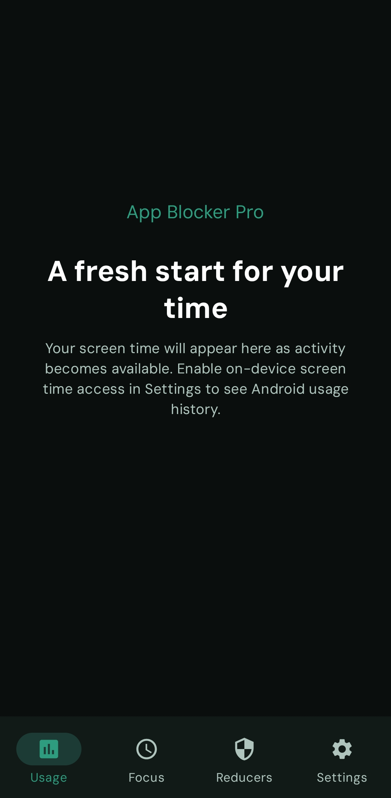
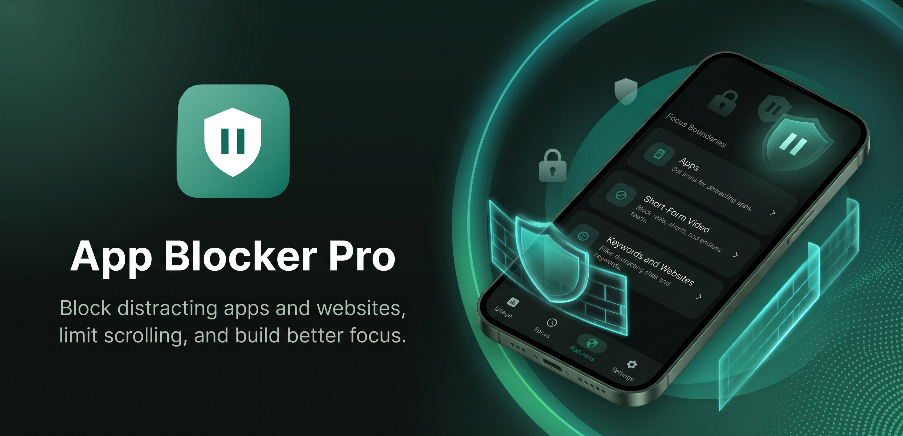

01 / BOUNDARIES
Keep distractions
at a distance.
Block distracting apps and websites. Set usage limits and schedules, so your boundaries fit your day — not the other way around.
App & website blockingSMALL BOUNDARIES. BIGGER DAYS.
Block distracting apps and websites, limit scrolling, and build better focus.
Made for Android 8.0+ · Start with Google or as a guest
A LITTLE SPACE TO FOCUS

Less on your screen. More in your day.
YOUR EVERYDAY FOCUS TOOLKIT
You don’t need to give up your phone.
Just give your attention a better home.
Block distracting apps and websites. Set usage limits and schedules, so your boundaries fit your day — not the other way around.
App & website blockingStart a timed focus session, save reusable Focus Groups, or work in Pomodoro rounds with short breaks. Keep essentials available with an allowed-only setup.
Focus sessions & PomodoroUnderstand your screen time with on-device usage insights. Notice the patterns, make small changes, and build a rhythm that feels better.
Local screen-time insightsBlock Reels and Shorts in supported apps, or set time-based limits and schedules. No counting every swipe.
Restrict websites and keywords in supported browsers. Add schedules and time limits that fit your day.
Sync settings and reducer rules with a Google or guest account. Choose light, dark, or system theme.
Depending on the rule, wait, complete an effort challenge, tap an NFC tag, or meet a daily focus goal. NFC needs a compatible device and tag.
Alternate focus rounds with breaks, optionally enable Do Not Disturb, and review session totals, focus time, and streaks.
Core blocking and local settings work offline after setup. Keep required permissions enabled; Android battery restrictions can affect background operation.
A LOOK INSIDE
Your screen time, in one place.

Choose a duration. Make room to focus.

Small boundaries for everyday habits.

Your theme, permissions, and account.

Waiting adds intention to unlocking.

Continue with Google or explore as a guest.

Understand and enable the access your tools need.

On-device insights as activity becomes available.
Explore your focus toolkit
NOT A DIGITAL DETOX. A BETTER BALANCE.
No grand promises. Just practical tools to make your next choice a little more intentional.
Make your first boundaryContinue with Google or start as a guest. Enable the permissions your tools need.
Pick distracting apps or websites, set a limit, or begin a focus session.
Let your rules do their part. Check your usage and adjust as you go.
PERSONAL HABITS. PERSONAL DATA.
Your usage history isn’t a cloud feature.
App, website, and short-video usage details stay on your device. Firebase sync backs up settings and reducer configurations — not your usage history, active focus sessions, permissions, or protection passwords.
Start offline as a guest, or connect Google to keep your setup across devices. Guest settings also sync when connected. Cloud settings are protected by Firebase account controls, not end-to-end encryption.
The full privacy pictureLESS NOISE. MORE ROOM FOR LIFE.
A short introduction, your choice of account, and guided permission setup. Then you’re ready to begin.
.jpeg)
.jpeg)
.jpeg)

A FEW THINGS TO KNOW
The toolkit includes app and website blocking, daily time limits and schedules, keyword filtering, and time-based short-video limits. Start a focus session or use Pomodoro rounds with breaks. Website and short-video detection depend on supported apps and browsers; third-party updates can affect compatibility. Blocking also depends on Android permissions and battery settings.
Accessibility lets the app recognize relevant on-screen apps, websites, keywords, and short-video interfaces and apply your rules. Android Usage Access supplies on-device screen-time information. You choose these permissions in Android Settings. Read the permission details.
No. You can start as a guest, including offline. When online, a guest uses an anonymous Firebase account and syncs settings. Linking Google helps keep those settings accessible across devices. Guest accounts cannot be recovered after uninstalling unless linked to Google.
Local settings and core on-device tools remain usable offline, subject to the required permissions. Account sign-in, settings sync, and cloud account deletion need an internet connection. Sync retries when a connection is available; Android may delay background work.
Guests can use Settings → Account → Manage account and guest data → Delete guest data. For a Google-linked account, contact the developer to request account and cloud-settings deletion. Clearing storage or uninstalling alone does not delete cloud settings. Follow the full deletion guide.
THERE’S MORE TO YOUR DAY
A little focus. A little freedom. A good place to start.
GET IT ONGoogle PlayAndroid 8.0+ · Google sign-in or guest